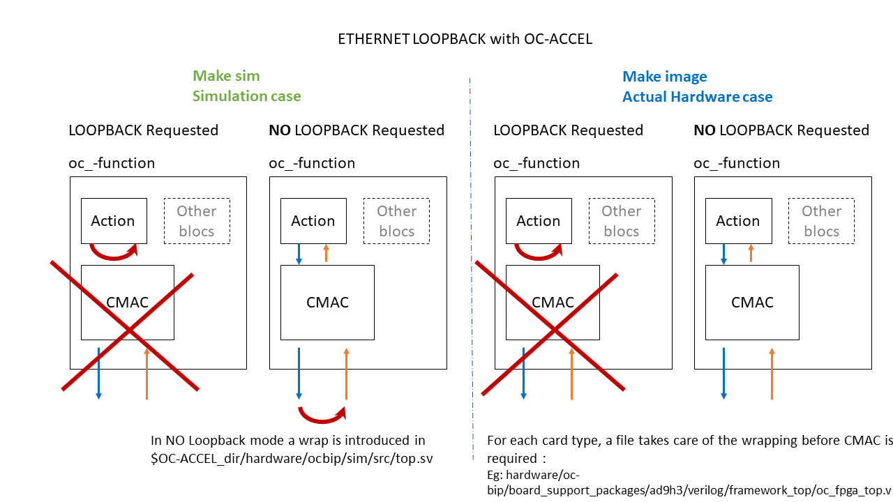

hls_udp_512

Code location:
Code can be found at:https://github.com/OpenCAPI/oc-accel/blob/master/actions/hls_udp_512/
In short:
This example allows to use a CMAC providing high speed data transfer capability.
Sample packets are internally generated and sent to the CMAC layer. The test expects packets to be externally loopback returned to compare them and thus check the complete path.
It can be checked in /action.Kconfig file that the ACTION_HALF_WIDTH bloc is used for this example, so the interface uses the OpenCAPI 512 bit bus.
Users' Guide:
Python code is changing characters case of a user phrase
- code can be executed on the CPU (will transform all characters to lower case)
- code can be simulated (will transform all characters to upper case in simulation)
- code can then run in hardware when the FPGA is programmed (will transform all characters to upper case in hardware)
The example code uses the copy mechanism to get/put the file from/to system host memory to/from DDR FPGA attached memory
Prerequisites:
As CMAC IP is under licence, make sure your license file is up-to-date.
Loopback modes
For debug purpose, an internal loopback can be selected, avoiding to use the CMAC layer, thus reducing synthesis and/or routing time.

Note
In simulation the CMAC bloc is always in loopback mode when selected.
In SHORT
Note
Only one CMAC bloc is available and only in OC-AD9H3 card at the time of writing.
The main application software will tune the number of packets to read, the MAC Address and the IP of the FPGA. All these exchanged data are contained in a structure defined in https://github.com/OpenCAPI/oc-accel/blob/master/actions/hls_udp_512/include/action_udp.H and shared with the hardware.
In return hardware will provide simple statistics.
/* Data structure used to exchange information between action and application */
/* Size limit is 108 Bytes */
typedef struct rx100G_job {
struct snap_addr out_frame_buffer;
uint64_t packets_to_read;
uint64_t read_size;
uint64_t bad_packets;
uint64_t ignored_packets;
uint64_t good_packets;
uint64_t fpga_mac_addr;
uint32_t fpga_ipv4_addr;
uint32_t user;
uint32_t mode;
uint32_t dummy; // to align with 8 bytes
} rx100G_job_t;
The hardware is defined using a C description in
https://github.com/OpenCAPI/oc-accel/tree/emac_2020_1/actions/hls_udp_512/hw
The example uses streams to echange with global memory, and output (input) hardware built packets into (from) CMAC.